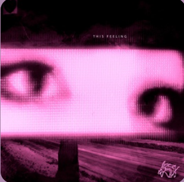

Фонк

Фонк — жанр электронной музыки, зародившийся в начале 1990-х годов. Характеризуется ломанными ритмами, глубоким басом и часто использованием сэмплов из старых видеоигр, аниме и фильмов.
История фонка
Фонк появился как поджанр хауса, но со временем впитал в себя элементы других жанров, таких как трип-хоп и хип-хоп. С развитием интернета фонк обрел большую популярность, особенно среди геймеров и любителей аниме-культуры.
Поджанры фонка
- Vaporwave
- Simpsonwave
- Hardwave
Известные исполнители фонка
- glichery
- InMental
- TrippleSix
- my!lane
Рекомендуемые альбомы

This Feeling
my!lane
Sea of Problems 2
glichery